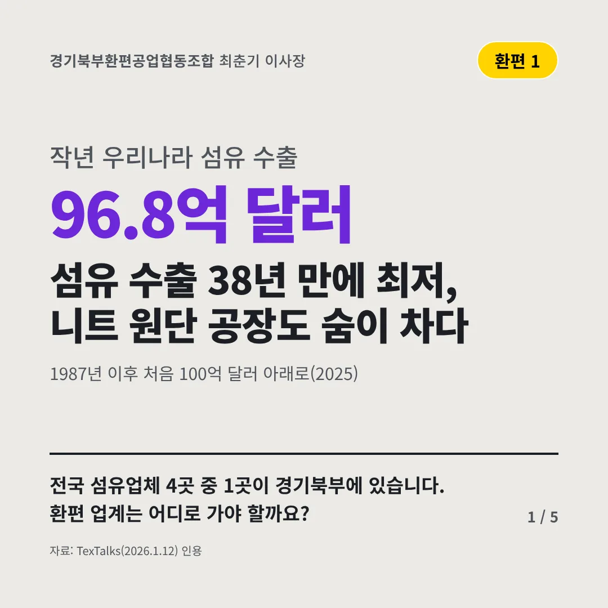
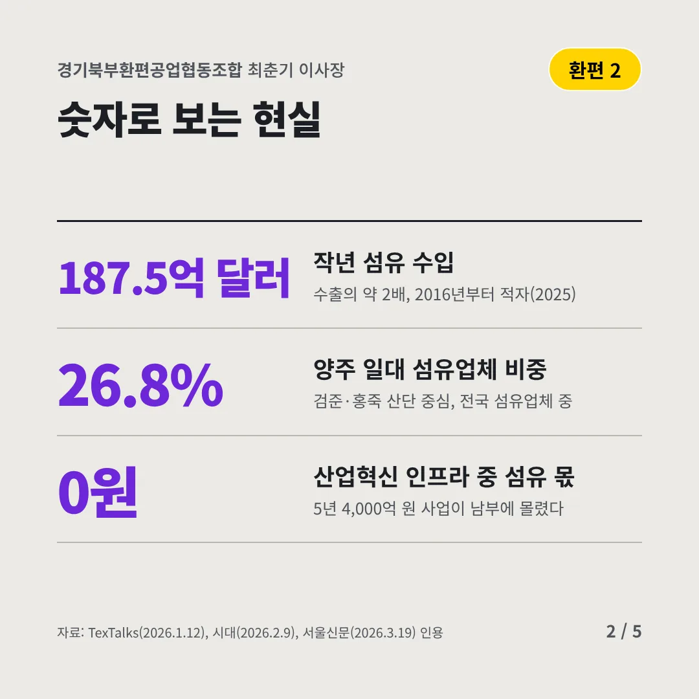
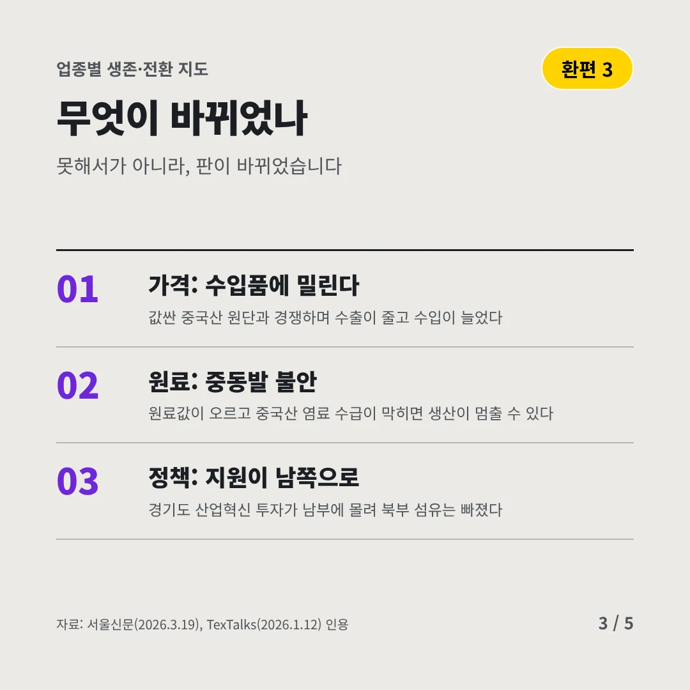
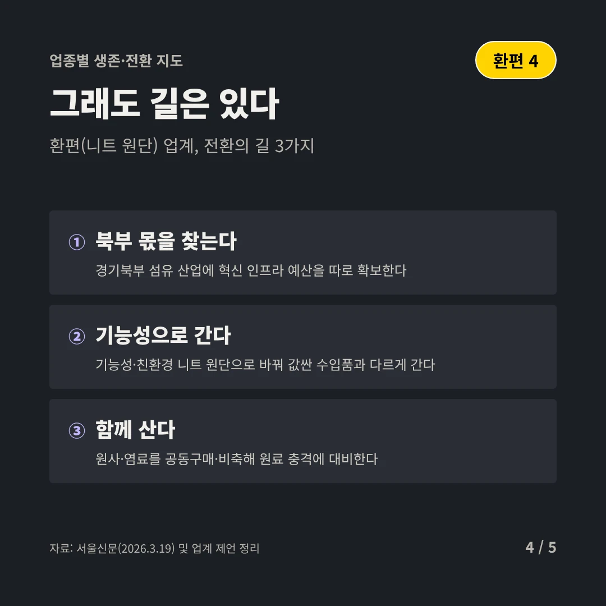
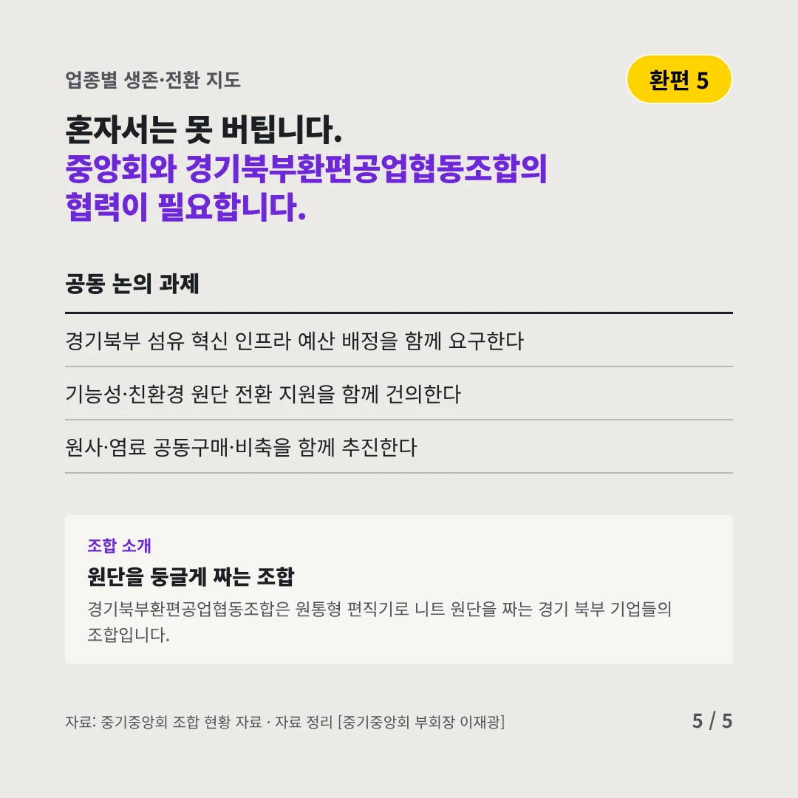
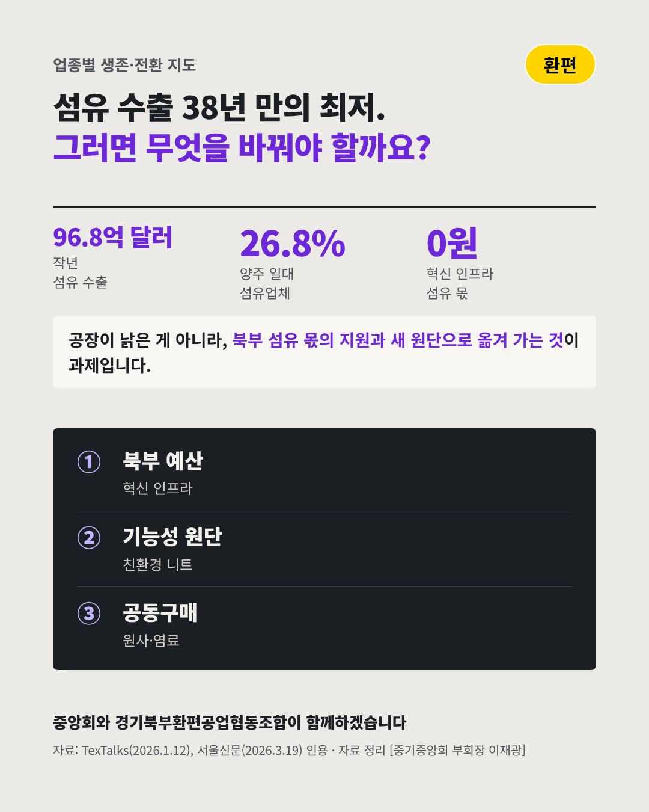

경기북부환편공업협동조합
섬유 수출 38년 만에 최저, 니트 원단 공장도 숨이 차다
96.8억 달러 작년 우리나라 섬유 수출






전국 섬유업체 4곳 중 1곳이 경기북부에 있습니다. 환편 업계는 어디로 가야 할까요?
숫자로 보는 현실
- 187.5억 달러작년 섬유 수입수출의 약 2배, 2016년부터 적자(2025)
- 26.8%양주 일대 섬유업체 비중검준·홍죽 산단 중심, 전국 섬유업체 중
- 0원산업혁신 인프라 중 섬유 몫5년 4,000억 원 사업이 남부에 몰렸다
무엇이 바뀌었나
- 가격: 수입품에 밀린다값싼 중국산 원단과 경쟁하며 수출이 줄고 수입이 늘었다
- 원료: 중동발 불안원료값이 오르고 중국산 염료 수급이 막히면 생산이 멈출 수 있다
- 정책: 지원이 남쪽으로경기도 산업혁신 투자가 남부에 몰려 북부 섬유는 빠졌다
그래도 길은 있다
- 북부 몫을 찾는다경기북부 섬유 산업에 혁신 인프라 예산을 따로 확보한다
- 기능성으로 간다기능성·친환경 니트 원단으로 바꿔 값싼 수입품과 다르게 간다
- 함께 산다원사·염료를 공동구매·비축해 원료 충격에 대비한다
한 장 요약

조합 소개
경기북부환편공업협동조합은 원통형 편직기로 니트 원단을 짜는 경기 북부 기업들의 조합입니다.
자료: TexTalks(2026.1.12), 시대(2026.2.9), 서울신문(2026.3.19)